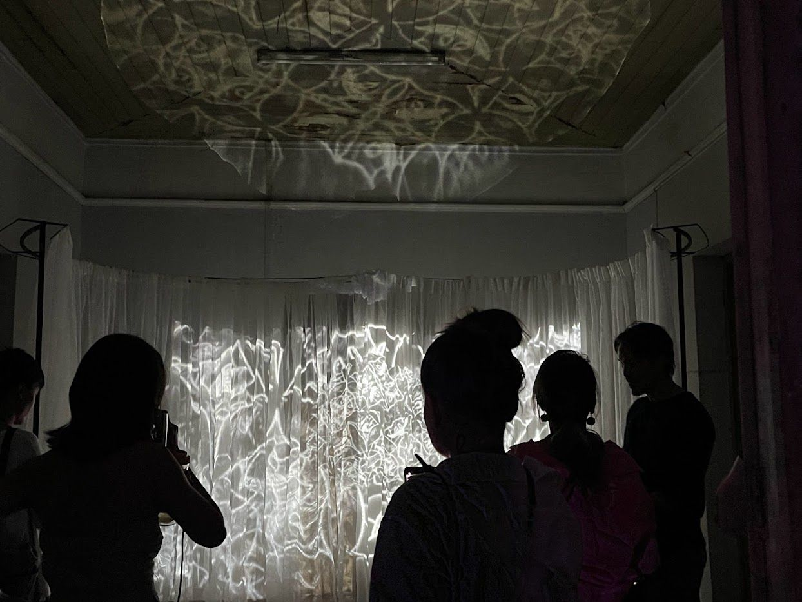
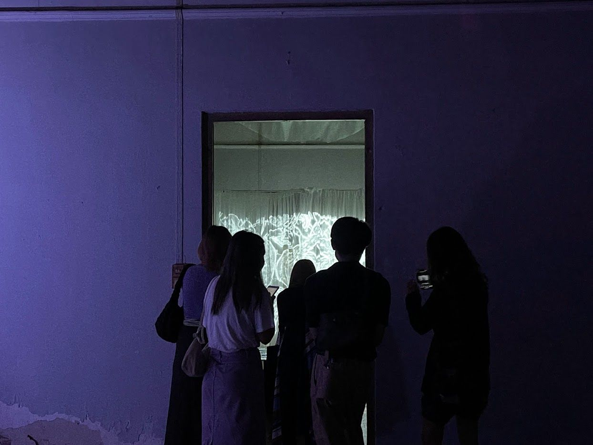

Charoen Krung is home to Buddhist, Christian and Muslim communities living side by side. Each decorates its places of worship with pattern, in paint, coloured tile or stained glass, patterns that carry belief as well as beauty. All of them grow from geometry, read differently in each tradition. The work uses mathematics to join the art of the three cultures.
